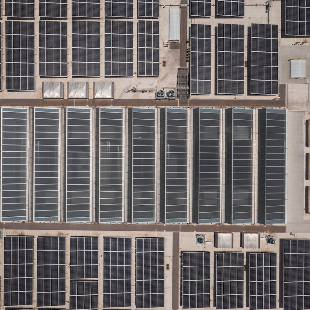
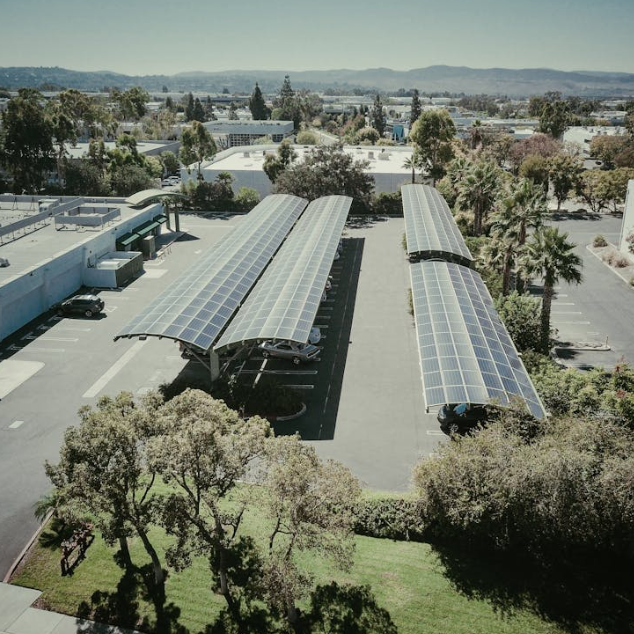
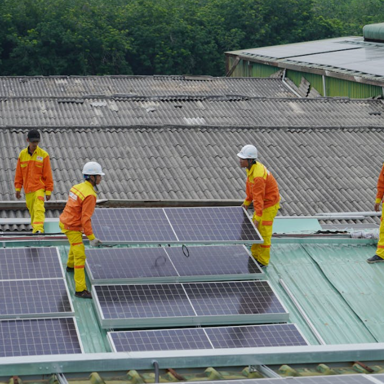
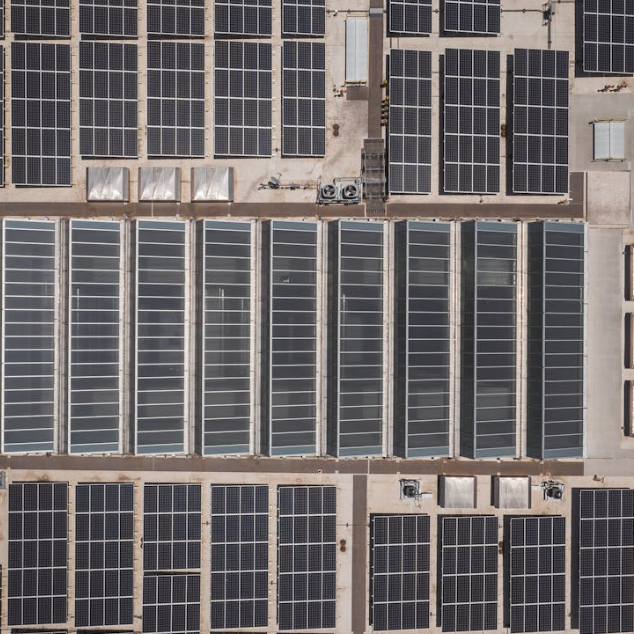
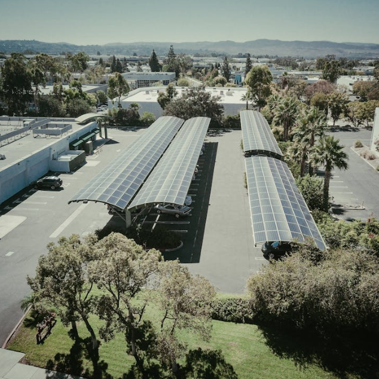
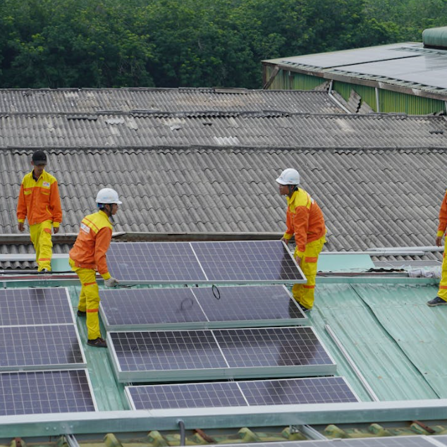

Proyecto Solar 1
El Proyecto Solar 1 consiste en la implementación de paneles solares de alta eficiencia para generar energía limpia y renovable. Este proyecto busca reducir la dependencia de combustibles fósiles, disminuir las emisiones de carbono y promover el uso de tecnologías sostenibles en comunidades urbanas y rurales.

Hidrógeno Verde
El hidrógeno verde es un tipo de hidrógeno producido mediante un proceso de electrólisis del agua, utilizando electricidad generada a partir de fuentes de energía renovable, como la solar o la eólica. Este proceso separa el agua en hidrógeno y oxígeno sin emitir dióxido de carbono (CO₂), lo que lo convierte en una alternativa limpia y sostenible frente a los combustibles fósiles. Es considerado clave para la transición energética, ya que puede ser utilizado como combustible en sectores como el transporte, la industria y la generación de energía, contribuyendo a la descarbonización y a la lucha contra el cambio climático.

Proyecto Eólico Innovador
El Proyecto Eólico Innovador se centra en la instalación de turbinas eólicas de última generación para aprovechar la energía del viento de manera eficiente. Este proyecto busca impulsar la generación de energía renovable, reducir las emisiones de gases de efecto invernadero y fomentar el desarrollo sostenible en comunidades locales.
Transformación Productiva
El proyecto de Transformación Productiva busca modernizar y optimizar los procesos productivos en comunidades rurales y urbanas, promoviendo el uso de tecnologías sostenibles y prácticas innovadoras. Este enfoque contribuye al desarrollo económico local, mejora la eficiencia en el uso de recursos y fomenta la sostenibilidad ambiental.
 





Paneles Solares Urbanos
Este proyecto se enfoca en la implementación de paneles solares en áreas urbanas, buscando maximizar la generación de energía limpia y promover la sostenibilidad en entornos urbanos.